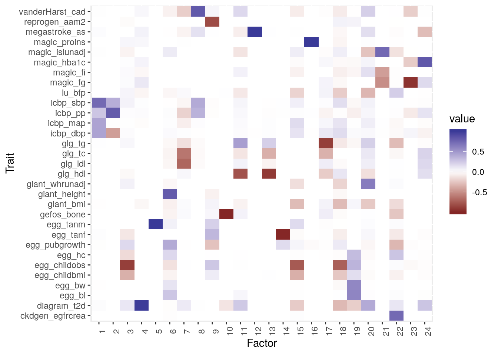
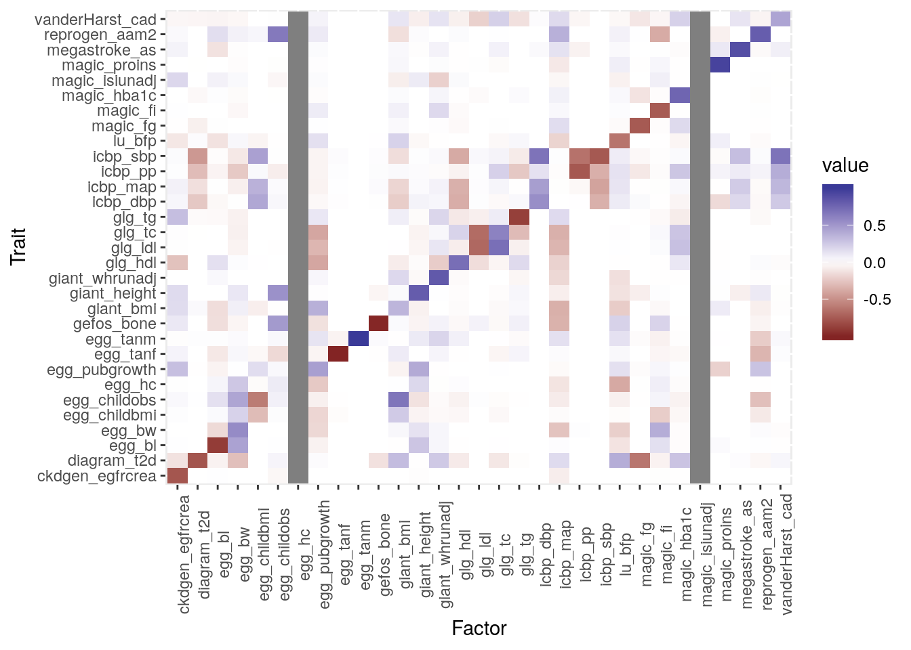
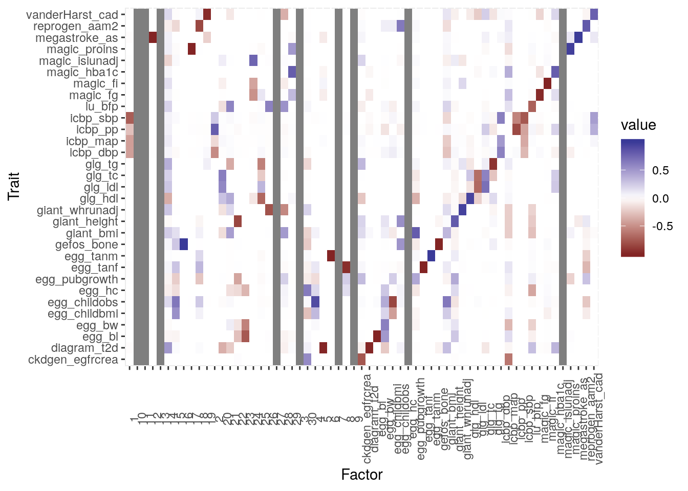

Fixed Factors
Jean Morrison
2019-09-04
Last updated: 2019-09-06
Checks: 6 1
Knit directory: sumstatFactors/
This reproducible R Markdown analysis was created with workflowr (version 1.4.0.9000). The Checks tab describes the reproducibility checks that were applied when the results were created. The Past versions tab lists the development history.
Great! Since the R Markdown file has been committed to the Git repository, you know the exact version of the code that produced these results.
Great job! The global environment was empty. Objects defined in the global environment can affect the analysis in your R Markdown file in unknown ways. For reproduciblity it’s best to always run the code in an empty environment.
The command set.seed(20190819) was run prior to running the code in the R Markdown file. Setting a seed ensures that any results that rely on randomness, e.g. subsampling or permutations, are reproducible.
Great job! Recording the operating system, R version, and package versions is critical for reproducibility.
- fix_load_all1
- fix_load_all2
- fix_load_all3
- fix_load_ldl
- fixed_factors1
To ensure reproducibility of the results, delete the cache directory fixed_factors_cache and re-run the analysis. To have workflowr automatically delete the cache directory prior to building the file, set delete_cache = TRUE when running wflow_build() or wflow_publish().
Great job! Using relative paths to the files within your workflowr project makes it easier to run your code on other machines.
Great! You are using Git for version control. Tracking code development and connecting the code version to the results is critical for reproducibility. The version displayed above was the version of the Git repository at the time these results were generated.
Note that you need to be careful to ensure that all relevant files for the analysis have been committed to Git prior to generating the results (you can use wflow_publish or wflow_git_commit). workflowr only checks the R Markdown file, but you know if there are other scripts or data files that it depends on. Below is the status of the Git repository when the results were generated:
Ignored files:
Ignored: .Rhistory
Ignored: .Rproj.user/
Ignored: analysis/fixed_factors_cache/
Ignored: analysis/metabo_flash_experiments_cache/
Ignored: analysis/pathway_factors_cache/
Untracked files:
Untracked: R/snp_to_pathway.R
Untracked: analysis_data/.~lock.metabo2_gwas.csv#
Untracked: analysis_data/HACER-enhancers.txt
Untracked: analysis_data/HACER_README.txt
Untracked: analysis_data/bc_gwas_mats.RDS
Untracked: analysis_data/eqtl_genes.RDS
Untracked: analysis_data/flashier_res2019-09-03.RDS
Untracked: analysis_data/metabo2_gwas.csv
Untracked: analysis_data/metabo3_order1__flashier__by_col.RDS
Untracked: analysis_data/metabo3_order1__flashier__by_row.RDS
Untracked: analysis_data/metabo3_order1__flashier__constant.RDS
Untracked: analysis_data/metabo3_order1__flashier__kronecker.RDS
Untracked: analysis_data/metabo3_order1__flashier__noisy_bycol.RDS
Untracked: analysis_data/metabo3_order1__flashier__noisy_byrow.RDS
Untracked: analysis_data/metabo3_order1__flashier__noisy_constant.RDS
Untracked: analysis_data/metabo3_order1__flashier__zero.RDS
Untracked: analysis_data/metabo3_order1__from_data__by_col.RDS
Untracked: analysis_data/metabo3_order1__from_data__by_row.RDS
Untracked: analysis_data/metabo3_order1__from_data__constant.RDS
Untracked: analysis_data/metabo3_order1__from_data__kronecker.RDS
Untracked: analysis_data/metabo3_order1__from_data__noisy_bycol.RDS
Untracked: analysis_data/metabo3_order1__from_data__noisy_byrow.RDS
Untracked: analysis_data/metabo3_order1__from_data__noisy_constant.RDS
Untracked: analysis_data/metabo3_order1__from_data__zero.RDS
Untracked: analysis_data/metabo3_order1__soft_impute__by_col.RDS
Untracked: analysis_data/metabo3_order1__soft_impute__by_row.RDS
Untracked: analysis_data/metabo3_order1__soft_impute__constant.RDS
Untracked: analysis_data/metabo3_order1__soft_impute__kronecker.RDS
Untracked: analysis_data/metabo3_order1__soft_impute__noisy_bycol.RDS
Untracked: analysis_data/metabo3_order1__soft_impute__noisy_byrow.RDS
Untracked: analysis_data/metabo3_order1__soft_impute__noisy_constant.RDS
Untracked: analysis_data/metabo3_order1__soft_impute__zero.RDS
Untracked: analysis_data/metabo3_order1_mask__flashier__by_col.RDS
Untracked: analysis_data/metabo3_order1_mask__flashier__by_row.RDS
Untracked: analysis_data/metabo3_order1_mask__flashier__constant.RDS
Untracked: analysis_data/metabo3_order1_mask__flashier__kronecker.RDS
Untracked: analysis_data/metabo3_order1_mask__flashier__noisy_bycol.RDS
Untracked: analysis_data/metabo3_order1_mask__flashier__noisy_byrow.RDS
Untracked: analysis_data/metabo3_order1_mask__flashier__noisy_constant.RDS
Untracked: analysis_data/metabo3_order1_mask__flashier__zero.RDS
Untracked: analysis_data/metabo3_order1_mask__from_data__by_col.RDS
Untracked: analysis_data/metabo3_order1_mask__from_data__by_row.RDS
Untracked: analysis_data/metabo3_order1_mask__from_data__constant.RDS
Untracked: analysis_data/metabo3_order1_mask__from_data__kronecker.RDS
Untracked: analysis_data/metabo3_order1_mask__from_data__noisy_bycol.RDS
Untracked: analysis_data/metabo3_order1_mask__from_data__noisy_byrow.RDS
Untracked: analysis_data/metabo3_order1_mask__from_data__noisy_constant.RDS
Untracked: analysis_data/metabo3_order1_mask__from_data__zero.RDS
Untracked: analysis_data/metabo3_order1_mask__soft_impute__by_col.RDS
Untracked: analysis_data/metabo3_order1_mask__soft_impute__by_row.RDS
Untracked: analysis_data/metabo3_order1_mask__soft_impute__constant.RDS
Untracked: analysis_data/metabo3_order1_mask__soft_impute__kronecker.RDS
Untracked: analysis_data/metabo3_order1_mask__soft_impute__noisy_bycol.RDS
Untracked: analysis_data/metabo3_order1_mask__soft_impute__noisy_byrow.RDS
Untracked: analysis_data/metabo3_order1_mask__soft_impute__noisy_constant.RDS
Untracked: analysis_data/metabo3_order1_mask__soft_impute__zero.RDS
Untracked: analysis_data/metabo_gwas.csv
Untracked: analysis_data/pathway_loadings_data.RDS
Untracked: buttons.css
Untracked: code/flashier_compare.R
Untracked: code/hide_output.js
Untracked: man/annotate_snp_loc.Rd
Untracked: man/genes_within.Rd
Untracked: man/get_eqtl_genes.Rd
Untracked: snp_annot.RDS
Unstaged changes:
Modified: NAMESPACE
Modified: R/package.R
Modified: analysis/basic_flash_analysis.Rmd
Modified: analysis/metabo_flash_experiments.Rmd
Note that any generated files, e.g. HTML, png, CSS, etc., are not included in this status report because it is ok for generated content to have uncommitted changes.
These are the previous versions of the R Markdown and HTML files. If you’ve configured a remote Git repository (see ?wflow_git_remote), click on the hyperlinks in the table below to view them.
| File | Version | Author | Date | Message |
|---|---|---|---|---|
| Rmd | f1d6d49 | Jean Morrison | 2019-09-07 | wflow_publish(c(“analysis/index.Rmd”, “analysis/metabo_flash_experiments_order1.Rmd”, |
Warning: replacing previous import 'intervals::reduce' by 'purrr::reduce'
when loading 'sumstatFactors'Fit with no fixed factors
Experiments in this analysis are done using flashr and the same data used previously. As a baseline and for later comparisons, we first fit the data with no fixed factors (we’ve done this before). In this case we are using the from data initialization and the “zero” variance type.
mats <- readRDS("analysis_data/metabo3_gwas_mats_order1.RDS")
mats$beta_hat[is.na(mats$se_hat)] <- NA
mats$se_hat[is.na(mats$beta_hat)] <- Inf
traits <- str_split(mats$traits, "/") %>% map(., 2) %>%
unlist(.) %>%
str_replace(., ".top_summary_statistics.tsv.gz", "") %>%
str_replace(., "metabo3_", "")
ntrait <- length(mats$traits)
nsnp <- length(mats$snps)plot_factors(f1$ldf$f, traits)
Fixed factor representing LDL
Associations of this factor with other traits could indicate causal effects of LDL. However, this requires that LDL has no shared factors with any other traits. This illustrates how it might be hard to use this approach to infer causal effects. Also this takes a long time to fit.
ldf <- flash_get_ldf(f2)
plot_factors(ldf$f, traits)
The “LDL” factor is the first one. We say that it represents LDL because we have restricted all other factors so that they cannot affect LDL. This means that all of the affects on LDL have to be absorbed by factor 1. These results suggest that LDL might affect total cholesterol, triglycerides, blood pressure, CAD, stroke and T2D with the effect on T2D being in the opposite direction (higher LDL associated with lower T2D risk). This is close to the set of traits that IVW regression suggests LDL may have a causal effect on (using results from CAUSE paper, not new analysis). Those were triglycerides, HDL, total cholesterol, bmi, body fat %, pulse pressure, CAD, stroke and T2D with effects all being in consistent directions where they are overlapping. CAUSE finds a causal effect only on total cholesterol and CAD.
Fixed loadings
We can also have loadings that are only loaded on fixed variants sets. Here I try having a loading that can only include variants with an LDL \(p\)-value less than \(10^{-6}\). My hypothesis is that this might give a similar result to the experiment above. It also forces a factor to strongly represent LDL but is less rigid than the fixed factor approach.
plot_factors(ldf$f, traits)
The “LDL factor” (factor 1) is similar to the LDL factor in the previous fit where we used fixed factors istead. However, factor 15 also contributes to LDL and a few other traits. This could be absorbing additional pleiotropic effects.
What if we do this for all of the traits? We can fit first with only these fixed factors and then allow some additional ones.
var_ix <- apply(mats$z, 2, function(x){which(abs(x) > z_thresh)})
LL <- matrix(0, nrow=nsnp, ncol=ntrait)
fixl <- matrix(TRUE, nrow=nsnp, ncol=ntrait)
for(i in seq(ntrait)){
LL[var_ix[[i]], i] <- 1
fixl[var_ix[[i]], i] <- FALSE
}With only the fixed factors
plot_factors(ldf$f, traits, factor_names = traits)
With some additional factors
plot_factors(ldf$f, traits, factor_names =c(traits, 1:30))
sessionInfo()
R version 3.6.1 (2019-07-05)
Platform: x86_64-pc-linux-gnu (64-bit)
Running under: Ubuntu 18.04.2 LTS
Matrix products: default
BLAS: /usr/lib/x86_64-linux-gnu/openblas/libblas.so.3
LAPACK: /usr/lib/x86_64-linux-gnu/libopenblasp-r0.2.20.so
locale:
[1] LC_CTYPE=en_US.UTF-8 LC_NUMERIC=C
[3] LC_TIME=en_US.UTF-8 LC_COLLATE=en_US.UTF-8
[5] LC_MONETARY=en_US.UTF-8 LC_MESSAGES=en_US.UTF-8
[7] LC_PAPER=en_US.UTF-8 LC_NAME=C
[9] LC_ADDRESS=C LC_TELEPHONE=C
[11] LC_MEASUREMENT=en_US.UTF-8 LC_IDENTIFICATION=C
attached base packages:
[1] stats graphics grDevices utils datasets methods base
other attached packages:
[1] reshape2_1.4.3 forcats_0.4.0
[3] stringr_1.4.0 dplyr_0.8.3
[5] purrr_0.3.2 readr_1.3.1
[7] tidyr_0.8.3 tibble_2.1.3
[9] ggplot2_3.2.1 tidyverse_1.2.1
[11] sumstatFactors_0.0.0.9000 flashr_0.6-6
loaded via a namespace (and not attached):
[1] httr_1.4.1 RMySQL_0.10.17 jsonlite_1.6
[4] foreach_1.4.7 modelr_0.1.5 assertthat_0.2.1
[7] mixsqp_0.1-97 cellranger_1.1.0 yaml_2.2.0
[10] ebnm_0.1-24 pillar_1.4.2 backports_1.1.4
[13] lattice_0.20-38 glue_1.3.1 digest_0.6.20
[16] rvest_0.3.4 colorspace_1.4-1 htmltools_0.3.6
[19] Matrix_1.2-17 plyr_1.8.4 pkgconfig_2.0.2
[22] broom_0.5.2 haven_2.1.1 scales_1.0.0
[25] intervals_0.15.1 whisker_0.4 git2r_0.26.1
[28] generics_0.0.2 withr_2.1.2 ashr_2.2-32
[31] lazyeval_0.2.2 cli_1.1.0 magrittr_1.5
[34] crayon_1.3.4 readxl_1.3.1 evaluate_0.14
[37] fs_1.3.1 doParallel_1.0.15 nlme_3.1-141
[40] MASS_7.3-51.4 xml2_1.2.2 truncnorm_1.0-8
[43] tools_3.6.1 hms_0.5.1 softImpute_1.4
[46] munsell_0.5.0 flashier_0.1.16 compiler_3.6.1
[49] rlang_0.4.0 grid_3.6.1 iterators_1.0.12
[52] rstudioapi_0.10 labeling_0.3 rmarkdown_1.15
[55] gtable_0.3.0 codetools_0.2-16 DBI_1.0.0
[58] R6_2.4.0 lubridate_1.7.4 knitr_1.24
[61] zeallot_0.1.0 workflowr_1.4.0.9000 rprojroot_1.3-2
[64] stringi_1.4.3 pscl_1.5.2 parallel_3.6.1
[67] SQUAREM_2017.10-1 Rcpp_1.0.2 vctrs_0.2.0
[70] tidyselect_0.2.5 xfun_0.9